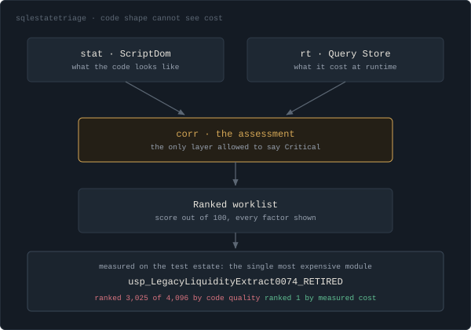

Things I've Built
Each one came out of a problem I hit on the job, and each runs against real SQL Server or Postgres instances rather than fixtures.
SQLGuardian
Runbook automation for SQL Server incident response
Most monitoring tools tell you something is wrong. SQLGuardian is the layer on top of that: it ingests a team's actual SOPs and runbooks, and when a check fires (blocking chain, wait statistics spike, Agent job failure, disk space, backup age, log growth, long-running request) it walks the on-call engineer through that team's troubleshooting process instead of a generic one. When it catches a blocking chain, it names the head-blocker session, shows the statement holding the lock, and lists resolution options in order of risk, with KILL last. The LLM also drafts the incident report from the evidence the checks already collected, the part of incident response nobody has time to write, so it usually just does not happen. The same underlying data renders two ways: a technical view for the DBA, and a plain-language summary for whoever is asking why the app feels slow.

SQL Estate Triage
Which stored procedures in an estate are worth an engineer's time
A linter ranks stored procedures by how bad the code looks. That is not the same as which ones are costing you anything. Measured against a 4,096-module estate across four servers, the single most expensive procedure ranked 3,025th of 4,096 by code quality, and the objects a linter puts at the top of its list had no recorded executions at all. Reviewing in linter order means spending the quarter on dead code.
It is also how I reverse-engineer an estate nobody documented. SQL Estate Triage inventories the registered servers, extracts and parses every T-SQL module with ScriptDom, collects Query Store runtime data, and joins the two into a ranked worklist with the score breakdown on screen: CPU share, business criticality, logical read share, static risk, complexity, execution frequency. Static analysis is architecturally forbidden from marking anything critical, enforced both in the C# type system and by a CHECK constraint on the findings table, because code shape cannot see cost. Business criticality is gated on measured impact for the same reason: without the gate, procedures nobody runs floated to the top.
Everything it does against a monitored server is read only, and it is built to prove that rather than assert it: least privilege (VIEW ANY DEFINITION and VIEW SERVER STATE, never sysadmin), a reader type that exposes only query methods, and a test that parses every SQL constant in the codebase with ScriptDom and fails the build if the syntax tree contains a modification statement or any DDL. A full scan of 15 databases across 4 instances takes 63 seconds, 33 on re-run with unchanged modules skipped by content hash.

QueryLens
A code-review gate for T-SQL, plus natural language to SQL
Analyze checks a query against nine rules for the patterns that stop an index being used: a function wrapped around an indexed column, a leading-wildcard LIKE, NOT IN against a subquery. It returns a score out of 100, a letter grade, and for every finding, what is wrong and what to write instead. The scoring is plain regex and arithmetic, so the same query always gets the same grade. The model writes SQL, it never grades it. I built it as the mechanism for enforcing team coding standards before a query reaches code review, rather than relying on whoever is reviewing that day to remember all nine.
Ask turns a plain-English question into SQL, runs it against a live PostgreSQL database, and shows both the query and the rows that came back. The database connection only executes statements that begin with SELECT.

FlowLens
Write-audit-publish gate for SQL Server ETL
A stored procedure can finish with no errors, log Succeeded, and still lose a third of its rows to one bad join. FlowLens loads each batch into staging and holds it there until it clears three gates: the declared data contracts, a source-to-target reconciliation on row counts and key values, and an IsolationForest check against the batch history. The verdict is deterministic SQL and statistics. The LLM only writes the incident report, using the evidence the gate already collected, so it has no way to declare a bad batch clean.

AuditLens
Audit evidence and access anomaly detection for SQL Server
This one comes straight out of the quarter-end evidence gathering I did at Bank of America, where producing the answer took longer than knowing it. Three parts.
The evidence pack builder runs a fixed query set against each instance (server and database role membership, explicit object grants, login and password policy state, backup and restore history), then renders a dated pack with each result mapped to the SOX or HIPAA control it satisfies. The answer to "who could read this table in Q2" becomes a document you hand over, not an afternoon of ad-hoc queries.
The privilege-creep inventory diffs role membership between two packs and lists what was granted, to whom, and when. The finding that matters at audit is rarely current state, it is the temporary grant nobody removed.
The access baseline profiles each principal per database on its normal hours, its normal set of objects and its normal read volume, then runs an Isolation Forest over those features to flag sessions that do not fit. A concrete example of what that catches: a reporting service account that reads the same six tables every weekday between 06:00 and 20:00 starts reading a seventh at 03:00 on a Sunday. It holds permission to do that, so no rule-based check fires and nothing shows up in an access review. It only stands out against the account's own history.